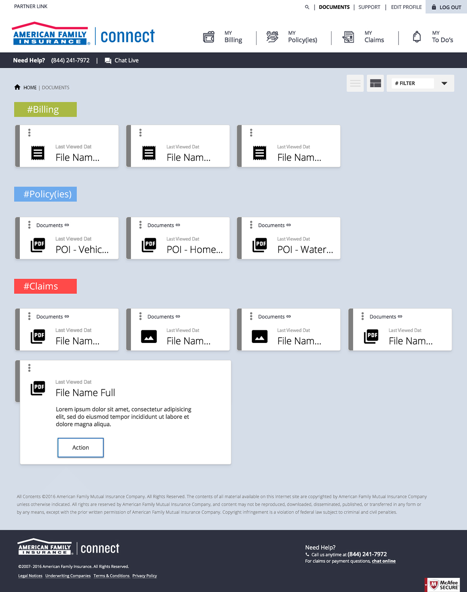
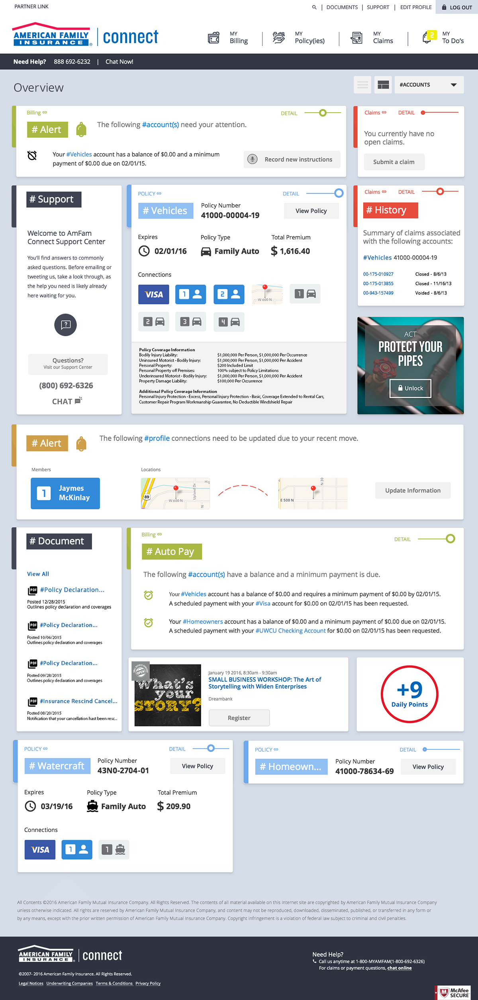

Project Type: Service Portal Redesign
Focus: UX Research, UX Design and UI Design
Deliverables: Concepts, solutions, wireframes and mock-ups
Opportunity – Allow the customer to navigate within areas of their account in order to pay bills, check status and make changes.
Step 1: Tasked with creating excitement and client buy-in for an upcoming project, we decide to create in high-fidelity to illustrate concepts for card-based navigation, to-do lists and other various modern web techniques.
 dragDrop_Teaser from James Martin on Vimeo.
BBB_HappyFlow from James Martin on Vimeo.
Step 2: We received a green light for the project and proceeded to define our problem spaces.
Step 3: Once we created sound solutions to our problems, it was time to create.
Working with an enterprise style guide, we were able to establish a similar look to the corporate identity while still making the service unique enough to ensure customer were no longer on a marketing website.
Thanks for reviewing my project. Please feel free to disover more of my work via the homepage or by reviewing my employment history.
Email me